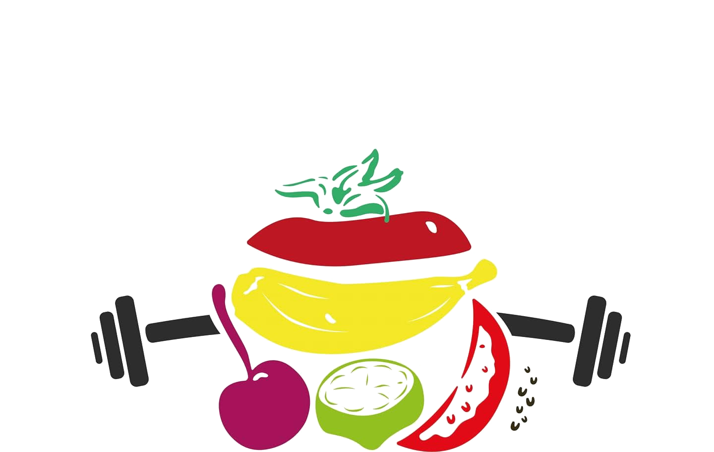
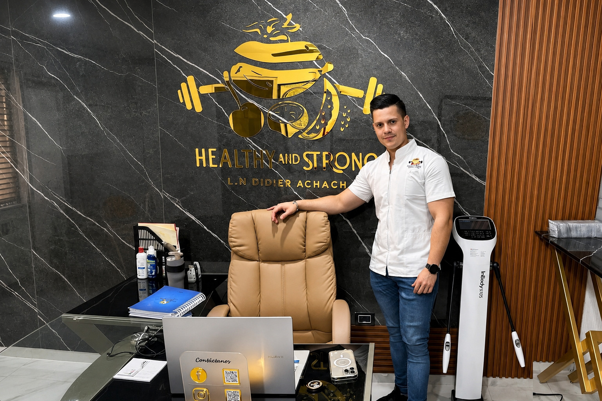

Nutrición deportiva personalizada para elevar tu rendimiento, transformar tu composición corporal y alcanzar tu mejor versión.

Análisis completo de composición corporal, hábitos alimenticios y objetivos. La base de todo cambio real.
Diseño de plan nutricional adaptado a tu deporte, horario de entrenamiento y metas específicas.
Revisiones periódicas para ajustar el plan según tu progreso. Constancia que genera resultados reales.
Preparación nutricional especializada para atletas y competidores: peaking, cutting, carb loading.
Protocolo de suplementos basado en evidencia científica. Sin mitos, sin gastos innecesarios.
Todo el servicio de forma remota. Ideal si estás fuera de Mérida o tienes agenda complicada.
Soy Didier Achach, nutriólogo especializado en nutrición deportiva con más de 8 años ayudando a atletas, deportistas recreativos y personas que buscan transformar su cuerpo a través de la ciencia de la alimentación.
Mi enfoque es claro: planes reales, resultados medibles, sin restricciones absurdas. Creo en la nutrición como herramienta de rendimiento, no de castigo.

img/didier.jpg
Análisis de composición corporal, hábitos y metas. Entendemos tu punto de partida real.
Diseño de tu plan de alimentación personalizado, calculado al detalle para tu objetivo.
Implementas el plan con soporte continuo. Resolvemos dudas y ajustamos en tiempo real.
Resultados medibles, sostenibles y respaldados por ciencia. Tu mejor versión.
"Perdí 12 kg en 4 meses sin sentir que estaba a dieta. Didier me enseñó a comer, no a sufrir. Mis marcas en el gym mejoraron notablemente."
"Me preparé para mi primera competencia de fisiculturismo con Didier. El protocolo de peaking fue impecable, llegué en la mejor condición de mi vida."
"Como corredor de maratón necesitaba algo serio. El plan de nutrición de Didier mejoró mi tiempo en 18 minutos. La diferencia fue brutal."
Tu primera consulta es el primer paso. Agenda ahora y comencemos a trabajar en tu mejor versión.